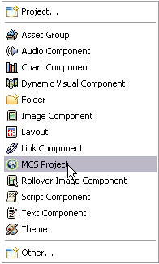

Perspectives define the initial set and layout of views in the Workbench window. When you open the MCS perspective, MCS initially displays the set of features you are most likely to need for policy development. You can modify the layout of a perspective at any time, and Eclipse will save the current set up.
You can select the MCS perspective in a number of ways, depending on how you have customized the Eclipse environment. For example, you may decide to customized your XML editor perspective to include MCS menuitems on a menu. If you plan to use MCS frequently, you might want to make it the default perspective.
To open the MCS perspective when no menus are customized, choose Window | Open Perspective | Other.
To make the MCS perspective the default:
To create MCS menu shortcuts:
The next time you choose New in the MCS perspective the shortcuts will appear.

To customize another perspective menu for MCS:
The next time you choose Window | Open Perspective or Window | Show View in the perspective you have customized, MCS or the MCS views appear as a menuitems.
Tip: If you have more than one perspective open you can switch perspective by clicking on the tab.
Related topic
Working with MCS policies